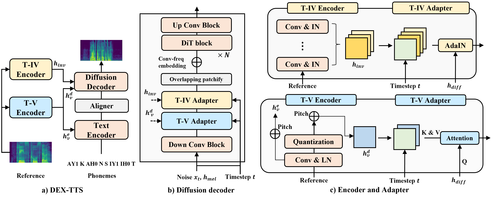

DEX-TTS¶
基本信息
- 标题: DEX-TTS: Diffusion-based EXpressive Text-to-Speech with Style Modeling on Time Variability - 作者: - 01 [Hyun Joon Park](../../Authors/Hyun_Joon_Park.md) - 02 [Jin Sob Kim](../../Authors/Jin_Sob_Kim.md) - 03 [Wooseok Shin](../../Authors/Wooseok_Shin.md) - 04 [Sung Won Han](../../Authors/Sung_Won_Han.md) - 机构: - [Korea University](../../Institutions/Korea_University.md) - 时间: - 预印时间: 2024.06.27 ArXiv v1 - 更新笔记: 2024.06.28 - 发表: - 期刊/会议 - 链接: - [ArXiv](https://arxiv.org/abs/2406.19135) - [DOI]() - [Github](https://github.com/winddori2002/dex-tts) - [Demo](https://dextts.github.io/demo.github.io/) - [Scholar](https://scholar.google.com/scholar?cluster=) - 标签: - [语音合成](../../Tags/SpeechSynthesis.md) - [声学模型](../../Tags/Model_Acoustic.md) - [开源](../../Tags/OpenSource.md) - 页数: 20 - 引用: 49 - 被引: ? - 数据: - [VCTK](../../Datasets/2012.08.00_VCTK.md) - [ESD](../../Datasets/ESD.md) - 对比: - [MetaStyleSpeech](../../Models/_tmp/MetaStyleSpeech.md) + [HiFi-GAN](../../Models/TTS3_Vocoder/2020.10.12_HiFi-GAN.md) - [YourTTS](../../Models/E2E/2021.12.04_YourTTS.md) - [GenerSpeech](../_tmp/2022.05.15_GenerSpeech.md) + [HiFi-GAN](../../Models/TTS3_Vocoder/2020.10.12_HiFi-GAN.md) - [StyleTTS](../../Models/TTS2_Acoustic/2022.05.30_StyleTTS.md) + [HiFi-GAN](../../Models/TTS3_Vocoder/2020.10.12_HiFi-GAN.md) - 复现: - ?Abstract: 摘要¶
原文
> Expressive Text-to-Speech (TTS) using reference speech has been studied extensively to synthesize natural speech, but there are limitations to obtaining well-represented styles and improving model generalization ability. > In this study, we present ***Diffusion-based EXpressive TTS (DEX-TTS)***, an acoustic model designed for reference-based speech synthesis with enhanced style representations. > Based on a general diffusion TTS framework, ***DEX-TTS*** includes encoders and adapters to handle styles extracted from reference speech. > Key innovations contain the differentiation of styles into time-invariant and time-variant categories for effective style extraction, as well as the design of encoders and adapters with high generalization ability. > In addition, we introduce overlapping patchify and convolution-frequency patch embedding strategies to improve DiT-based diffusion networks for TTS. > ***DEX-TTS*** yields outstanding performance in terms of objective and subjective evaluation in English multi-speaker and emotional multi-speaker datasets, without relying on pre-training strategies. > Lastly, the comparison results for the general TTS on a single-speaker dataset verify the effectiveness of our enhanced diffusion backbone. > Demos are available here. > Audio samples are available at https://dextts.github.io/demo.github.io/利用参考语音进行表现性文本转语音已经被广泛研究用于合成自然语音, 但在获得良好表现的语音风格和提高模型泛化能力方面仍然存在局限性. 本研究中提出了 基于扩散的表现性文本转语音 (Diffusion-based EXpressive TTS, DEX-TTS) 模型, 这是一种专为基于参考的语音合成设计的声学模型, 具有增强的风格表现力. 基于一般的扩散文本转语音框架, DEX-TTS 包含编码器和适配器用于处理从参考语音中提取的风格. 关键的创新包括将风格区分为不随时间变化和随时间变化两类, 以实现有效的风格提取, 以及设计具有高度泛化能力的编码器和适配器. 此外, 我们引入重叠分块和对频率卷积分块嵌入策略以改进用于文本转语音的基于 DiT 的扩散网络. DEX-TTS 在英文多说话者和情感多说话者数据集上的客观和主观评估都表现出色, 无需依赖预训练策略. 最后, 针对单个说话人数据集的一般文本转语音比较结果验证了我们增强的扩散骨干网络的有效性. 演示样本可在 https://dextts.github.io/demo.github.io/ 获得.
1.Introduction: 引言¶
Text-to-Speech (TTS) (WaveNet; Tacotron; Tacotron2; FastSpeech) is the task of synthesizing natural speech from a given text, which is applied to various applications such as voice assistant services. To generate diverse and high-fidelity speech, researchers have studied Transformer \cite{li2019neural}-, GAN \cite{Parallel WaveGAN, yang2021ganspeech}-, and normalizing flow (Flow-TTS; Glow-TTS)-based TTS as deep generative models. Recently, with the success of diffusion models in various generative tasks \cite{ho2020denoising, ho2022imagen, schneider2023archisound}, researchers have shifted their focus to diffusion-based TTS (DiffWave; Diff-TTS; Grad-TTS, liu2022diffgan) and proved the outstanding performance of diffusion models in TTS as well.
Despite the improvement of the above general TTS studies, synthesizing human-like speech remains challenging due to the lack of expressiveness of synthesized speech such as the limited styles of reading, prosody, and emotion \cite{tan2021survey}. Since expressiveness can be reflected during synthesizing acoustic features such as mel-spectrograms, acoustic models have been investigated for expressive TTS. Although some studies \cite{lee2017emotional, kim2021expressive, li2021controllable} generate expressive speech using emotion labels or style tags, the necessity of label information constrains the applicability of the methods.
Considering the previous limitation, researchers have adopted reference-based TTS, which can operate without explicit labels (wang2018style, valle2020mellotron, lee2021styler, min2021meta, YourTTS; StyleTTS; GenerSpeech), for expressive TTS. These methods extract styles (e.g., emotion, timbre, and prosody) from reference speech and reflect these styles in the speech. For real-world applications, the reference-based TTS is designed to enable handling unseen reference speech, like reference speech from unseen speakers during training.
As aforementioned, expressive TTS utilizing a reference involves two steps, extracting the reference information (extractor) and incorporating the information into the synthesis process (adapter). For outstanding expressive TTS, the extractor and adapter should be designed based on the following two aspects: a well-represented style and generalization. That is, expressive TTS should extract rich styles from references and incorporate these styles into the synthesis process. Furthermore, it should have a high generalization ability to operate even in zero-shot scenarios. However, previous studies lacked considerations for network design from the above perspectives, resulting in lower performance in zero-shot or insufficient style reflection. It can be exacerbated when expressive speech is used as a reference because expressive speech contains diverse style information. It suggests the necessity of the network design under the above perspectives for expressive TTS. Some studies (YourTTS, StyleTTS; GenerSpeech) attempted to address this problem through pre-training stages or networks. However, problems such as complicated pipelines, additional label requirements, and dependencies on other models remain.
Another focus of this study is designing a strong TTS backbone, which is a component of expressive TTS, to obtain superior expressive TTS. We investigate diffusion-based TTS since it can synthesize high-quality speech through iterative denoising processes. Furthermore, we expect that style information can be effectively reflected by iteratively incorporating style information during the denoising process. A few studies (Diff-TTS; Grad-TTS; CoMoSpeech) on diffusion-based TTS have improved TTS performance by adapting diffusion formulations to suit TTS. However, the network of these studies was confined to simple U-Net, leading to limited latent representations. Although U-DiT TTS used DiT for the diffusion network, DiT is yet to be effectively leveraged for TTS.
To address the discussion, we propose a novel acoustic model, Diffusion-based EXpressive TTS (DEX-TTS). Based on a general diffusion TTS, DEX-TTS contains encoders and adapters to handle the styles of reference speech. First, we adopt overlapping patchify and convolution-frequency patch embedding to enhance the DiT-based diffusion TTS backbone. Furthermore, we separate styles into time-invariant and time-variant styles to extract diverse styles even from expressive reference speech. We design each time-invariant and time-variant encoder which utilizes multi-level feature maps and vector quantization, making well-refined styles. Lastly, we propose time-invariant and time-variant adapters that incorporate each extracted style into the speech synthesis process. For effective style reflection and high generalization capability, each method is based on Adaptive Instance Normalization (AdaIN) \cite{huang2017arbitrary} and cross-attention (Transformer) methods. To effectively leverage the iterative denoising process of diffusion TTS, we design adapters that adaptively reflect styles over time. Through the proposed methods, we can synthesize high-quality and reference-style speech.
We conduct experiments on multi-speaker and emotional multi-speaker datasets to verify the proposed methods. The results reveal that, including zero-shot scenarios, DEX-TTS achieves more outstanding performance than the previous expressive TTS methods in terms of speech quality and similarity. Unlike some existing methods that rely on pre-training strategies, DEX-TTS achieves superior performance as an independent model. Furthermore, to investigate the effect of our strategies to improve the diffusion TTS backbone, we conduct experiments on general TTS using our diffusion backbone. The results on the single-speaker dataset demonstrate the superior performance of the proposed method compared with previous diffusion TTS methods.
2.Related Works: 相关工作¶
2.1.Diffusion-Based TTS¶
原文
> As diffusion models in image synthesis have proven their outstanding performance \cite{ho2020denoising, song2020score, karras2022elucidating}, researchers have studied diffusion-based TTS. > [Diff-TTS](../../Models/TTS2_Acoustic/Diff-TTS.md), [Grad-TTS](../../Models/TTS2_Acoustic/2021.05.13_Grad-TTS.md), and [CoMoSpeech](../../Models/Diffusion/2023.05.11_CoMoSpeech.md) properly utilized diffusion methods for TTS. > Although they effectively applied diffusion formulation for TTS, diffusion networks in previous studies were limited to U-Net architectures. > It led to limited latent representations, indicating the necessity of improvement in the diffusion network design. > [U-DiT TTS](../../Models/Diffusion/2023.05.22_U-DiT_TTS.md) improved the design of diffusion networks in TTS by adopting [DiT](../../Models/_Basis/DiT.md) blocks while retaining some aspects of U-Net down- and up-sampling. > [DiT](../../Models/_Basis/DiT.md) can extract detailed representations using attention operations between small patches. > However, [U-DiT TTS](../../Models/Diffusion/2023.05.22_U-DiT_TTS.md) applied large patch strategies and sinusoidal position embedding to synthesize speech of variable time lengths, preventing it from fully leveraging the advantages of DiT. > In our work, we adopt an overlapping patchify and convolution-frequency patch embedding to exploit the advantage of DiT structure fully and to design an improved diffusion-based TTS model.由于扩散模型在图像合成领域已经证明了其卓越的性能, 研究人员开始研究基于扩散模型的文本转语音技术. Diff-TTS, Grad-TTS, CoMoSpeech 等模型恰当地利用了扩散方法进行文本转语音. 尽管它们有效地应用了扩散公式进行文本转语音, 但先前研究中的扩散网络主要局限于 U-Net 架构. 这局限了隐表示, 表明扩散网络设计有待改进的必要. U-DiT TTS 通过采用 DiT 模块, 同时保留 U-Net 下采样和上采样的部分, 改进了文本转语音中扩散网络的设计. DiT 可以利用小块之间的注意力操作提取详细表示. 然而 U-DiT TTS 采用了大块策略和正弦位置嵌入用于合成时长可变的语音, 这限制了其充分利用 DiT 的优势. 在本文中, 我们采用重叠块化和频率卷积块嵌入, 充分利用 DiT 结构, 并设计了改进的基于扩散模型的文本转语音模型.
2.2.Expressive TTS¶
Reference-based expressive TTS has attracted considerable interest due to the limitations of previous studies that require additional label information \cite{lee2017emotional, kim2021expressive, li2021controllable}. To condition reference information, some studies \cite{wang2018style, valle2020mellotron, YourTTS} used summation or concatenation, but these methods exhibited limited performance in zero-shot. On the other hand, MetaStyleSpeech \cite{min2021meta} and StyleTTS utilized adaptive normalization as a style conditioning method for robust performance in zero-shot. However, in these methods, pooling was applied to reference representations to obtain only a single-style vector, which did not effectively extract diverse styles from references. Although GenerSpeech proposed a multi-level style adapter to obtain diverse styles, their conditioning method during the synthesis process was confined to summation or concatenation. Previous studies lacked in designing methods to effectively process styles and improve generalization ability. Furthermore, previous studies (YourTTS; StyleTTS; GenerSpeech) have limitations requiring pre-training strategies for feature extraction. In our work, we introduce a novel standalone diffusion-based TTS that handles well-represented styles with dedicated extractors and adapters and exhibits strong generalization performance.
3.Methodology: 方法¶
3.1.Preliminaries: 预备知识¶
Diffusion Formulation¶
Before introducing our methods, we review the diffusion used in the study. The diffusion model consists of two processes: the diffusion process, which adds Gaussian noise to the original data, and the reverse process, which removes Gaussian noise to generate samples. Diffusion process yields noisy data ${x}{t=0}^{T}$, where $p{0}(x)$ is a data distribution $p_{data}(x)$ and $p_{T}(x)$ is indistinguishable from pure Gaussian noise. Song et al. \cite{song2020score} addressed the diffusion process as a stochastic process over time $t$ and defined diffusion process with Stochastic Differential Equations (SDE) as $dx = f(x,t)dt + g(t)dw$ where $w$ is Brownian motion, and $f(\cdot,t)$ and $g(\cdot)$ are drift and diffusion coefficients. Song et al. \cite{song2020score} also presented that a probability flow Ordinary Differential Equations (ODE) corresponds to the deterministic process of SDE, and it is defined as below:
$$ \begin{gathered} dx = [f(x,t)-\frac{1}{2}g(t)^{2}\triangledown_{x}logp_{t}(x)]dt \end{gathered} $$
The deterministic process is determined from the SDE when the score predicted by the score function $\triangledown_{x}logp_{t}(x)$ is known. For the reverse process, a numerical ODE solver such as Euler can be used.
EDM \cite{karras2022elucidating} defines the score function as $\triangledown_{x}logp_{t}(x)=(D_{\theta}(x,t)-x_{t})/\sigma^{2}{t}$ given $\sigma^{2}{t}$ is $\int g(t)^{2}dt$, and $D_{\theta}$ is a denoiser network trained by denoising error $||D_{\theta}(x_{t},t)-x||{2}^{2}$. To train a denoiser while avoiding gradient variation, EDM introduces pre-conditioning and $t$-dependent skip connection which are also investigated in CoMoSpeech where the schedule $\sigma{t}$ is $t$.
$$ \begin{gathered} D_{\theta}(x_{t},t)=c_{skip}(t)x_{t} + c_{out}(t)F_{\theta}(c_{in}(t)x, c_{noise}(t)) \end{gathered} $$
$F_{\theta}$ is the network before conditioning. We follow Equation \ref{eq:EDM} with the parameter settings in \cite{karras2022elucidating} to build diffusion. In practice, we can forward text and style representations into $D_{\theta}$ and $F_{\theta}$ to condition the denoising process, as described in CoMoSpeech.
3.2.Overall Architecture: 整体架构¶

原文
> Figure.01 depicts the architecture of ***DEX-TTS***. > In our TTS system, a vocoder is applied to the synthesized mel-spectrogram to convert it into a signal. > ***DEX-TTS*** contains encoders and adapters to extract and incorporate style information based on a basic TTS architecture. > To effectively extract styles from the reference speech, we define style information as two features, namely time-invariant (T-IV) and time-variant (T-V) styles. > T-IV styles contain global information that rarely varies within speech, whereas T-V styles contain information that varies within speech, such as intonation. > Based on this approach, the T-IV encoder passes extracted representation $h_{inv}$ to the diffusion decoder, and the T-IV adapter reflects it regardless of the time axis. > On the other hand, to preserve the temporal information of the representation $h^{d}_{v}$ from the T-V encoder, the T-V adapter in the diffusion decoder reflects the representation by considering the time axis. > In addition, the T-V encoder forwards the representation $h^{e}_{v}$ to the text encoder since the text representation varies over time.图 01 展示了 DEX-TTS 的架构. 在我们的文本转语音系统中, 声码器用于将合成的梅尔频谱转化为语音信号. DEX-TTS 包含编码器和适配器用于提取和整合风格信息. 为了有效地从参考语音中提取风格信息, 我们将风格信息定义为两种特征, 即非时变 (T-IV) 风格和时变 (T-V) 风格. T-IV 风格包含全局信息, 而 T-V 风格包含随时间变化的信息, 如语调. 基于这种方法, T-IV 编码器将提取的表示 $h_{inv}$ 传递给扩散解码器, 而 T-IV 适配器无视时间轴反射该表示. 另一方面, 为了保留 T-V 编码器从参考语音中提取的时变表示 $h^{d}{v}$, 扩散解码器中的 T-V 适配器考虑时间轴反射表示. 此外, T-V 编码器将表示 $h^{e}{v}$ 传递给文本编码器, 因为文本表示随时间变化.
Text Encoder: 文本编码器 (代码)¶
原文
> Given the input phonemes, the text encoder extracts the text representation $h_{text}$. > The text encoder consists of 8 layers, each composed of [Transformer](../_Transformer/2017.06.12_Transformer.md) encoder structure that includes Multi-Head Self-Attention (MHSA) and Feed-Forward Network (FFN). > To enhance the encoder, we incorporate relative position embedding, [RoPE](../_Transformer/2021.04.20_RoFormer.md), into the attention mechanism and apply the swish gate used in [RetNet](../_Transformer/2023.07.17_RetNet.md) after the attention operation. > Since text varies over time, $h^{e}_{v}$, defined as T-V styles, can be effectively utilized to condition styles for $h_{text}$. > We utilize [Adaptive Layer Normalization (AdaLN)](../../Models/TTS2_Acoustic/2021.03.01_AdaSpeech.md) after each MHSA and FFN to inject $h^{e}_{v}$, extracted by the T-V encoder given a reference input, into $h_{text}$. > See Section \ref{sec:appendix-text encoder} for more details.给定输入音素, 文本编码器提取文本表示 $h_{text}$. 文本编码器由 8 层组成, 每层都由 Transformer 编码器结构 (多头注意力, 前馈网络) 组成. 为了增强编码器, 我们整合相关位置嵌入 (旋转位置编码, RoPE) 到注意力机制中并在注意力运算后应用 RetNet 中的 Swish 门控. 因为文本随时间变化, $h^{e}{v}$ 定义为时变风格可以有效地用于条件 $h{text}$ 的风格. 我们在每个多头注意力和前馈网络后应用自适应层归一化 (Adaptive Layer Normalization, AdaLN)用于将由时变编码器从参考输入提取的 $h^{e}{v}$ 注入到 $h{text}$. 可以参阅附录获取更多细节.
Aligner: 对齐器¶
原文
> We adopt a convolution-based Duration Predictor (DP) ([Glow-TTS](../../Models/TTS2_Acoustic/2020.05.22_Glow-TTS.md)) in which $h_{text}$ extracted by the text encoder is used. > DP predicts the duration $\hat{d}$ which maps $h_{text}$ to frames of the mel-spectrogram for the initial mel-spectrogram representation $h_{mel}$ used as the condition input in the diffusion decoder. > Aligner is trained by the Monotonic Alignment Search (MAS) algorithm.我们采用 Glow-TTS 中基于卷积的时长预测器, 其中 $h_{text}$ 由文本编码器提取得到. 时长预测器预测时长 $\hat{d}$, 这将 $h_{text}$ 映射到初始梅尔频谱表示 $h_{mel}$ 的相应帧, 之后作为扩散解码器的条件输入. 对齐器由单调对齐搜索算法进行训练.
Diffusion Decoder: 扩散解码器 (代码)¶
Given time $t$ and corresponding noise $x_{t}$ generated by the diffusion process, the diffusion decoder synthesizes a denoised mel-spectrogram $\hat{x}$. Here, the initial mel-spectrogram representation $h_{mel}$ and styles $h_{inv, v}$ are utilized as conditioning information. For diffusion representation $h_{diff}$, we concatenate $x_{t}$, $h_{mel}$, and $t$, and pass it to the diffusion decoder, where $t$ is projected by sinusoidal encoding and linear layers.
The diffusion decoder comprises convolution blocks, adapters, and DiT blocks. To leverage powerful denoising in the latent space, we utilize up and down convolution blocks, as in Grad-TTS, to decrease and increase the resolution of $h_{diff}$. In the bottleneck, each adapter incorporates $h_{inv, v}$ into $h_{diff}$ to reflect each style information. Furthermore, we forward $t$ as an additional condition into adapters to effectively reflect styles during the iterative denoising process.
After adapters, we utilize DiT blocks to enhance latent representations. To effectively exploit DiT blocks, we introduce overlapping patchify and convolution-frequency (conv-freq) patch embedding. Unlike previous methods, we allow overlapping between patches, mitigating boundary artifacts between patches and enabling natural speech synthesis. For patchify, a convolution layer with a kernel size of $2 \times P - 1$ and stride of $P$ is used given patch size $P$. Let $h \in \mathbb{R}^{C \times F \times T}$ be the representations after adapters, where $C$, $F$, and $T$ are the hidden, frequency, and time sizes respectively. Given $F_{2}=F/P$ and $T_{2}=T/P$, the convolution layer patchifies $h$ into $h_{p} \in \mathbb{R}^{C \times F_{2} \times T_{2}}$.
Before converting the spatial dimensions of $h_{p}$ into a sequence for DiT inputs, embeddings are added to each frequency and time dimension. Since the speech length is variable, patch embedding should be able to handle unseen lengths during training. For the time axis, we apply a convolution layer to $h_{p}$ and take a time-wise average to obtain the relative positional embeddings $PE_{T} \in \mathbb{R}^{C \times 1 \times T_{2}}$. On the other hand, we use fixed-size learnable parameters as frequency embedding $PE_{F} \in \mathbb{R}^{C \times F_{2} \times 1}$ since the frequency size is not variable in speech synthesis. $PE_{T}$ and $PE_{F}$ are added to $h_{p}$, and the spatial dimension is converted into a sequence to be used as input for DiT. By the above embedding approach, we can get robust embedding for variable lengths compared to conventional embeddings obtained by fixed-size parameters or sinusoidal encoding. After the DiT block, the up-convolution block predicts a denoised mel-spectrogram from latent features.
3.3.Time-invariant Style Modeling¶
原文
> We model T-IV and T-V styles to extract well-represented styles from the reference speech. > For T-IV styles, we design the encoder and adapter to process global information within the speech.我们建模非时变和时变风格用于从参考语音中提取出良好表示的风格. 对于非时变风格, 我们设计编码器和适配器来处理语音中的全局信息.
T-IV Encoder¶
As depicted in Figure.01.c, the T-IV encoder consists of a few residual convolution blocks to extract the representation from the reference speech. To maintain individual characteristics regardless of the temporal information within a batch, we utilize Instance Normalization (IN) after each block. Inspired by \cite{park2023triaan}, we use multi-level feature maps as T-IV styles $ h_{inv} \in \mathbb{R}^{L \times C \times T}$, where $L$ is the number of layers in the T-IV encoder. Since $h_{inv}$ comprises all stacked feature maps from the convolution block, it contains T-IV information across the convolution blocks.
T-IV adapter¶
For T-IV Adatpor, we apply AdaIN, which can reflect styles regardless of temporal information, to inject $h_{inv}$ into $h_{diff}$ during the denoising process in the diffusion decoder. Given mean $\mu$ and standard deviation $\sigma$ as bias and scale for AdaIN, the process is defined as follows:
$$ \begin{gathered} AdaIN(h_{diff},\mu, \sigma) = IN(h_{diff}) \times \sigma + \mu \end{gathered} $$
where $\mu$ and $\sigma$ are obtained using $h_{inv}$. Since $h_{inv}$ contains the feature maps of all layers, we compute the channel-wise mean and standard deviation for each layer and utilize attention pooling (AP) \cite{park2023triaan} to obtain representative statistics ($\mu$ and $\sigma$) for AdaIN. Furthermore, we include time $t$ in the pooling process to ensure adaptive operation at each time step during the denoising process. The process for extracting $\mu$ and $\sigma$ is represented as follows:
$$ \begin{gathered} AP(x)=sum(softmax(xW_{ap}) \times x) \ \tilde{\mu}=[t; avg(h^{1}{inv}); ..., ;avg(h^{L}{inv})], \ \mu = AP(\tilde{\mu}) \ \tilde{\sigma}=[t; std(h^{1}{inv}); ..., ;std(h^{L}{inv})], \ \sigma = AP(\tilde{\sigma}) \ \end{gathered} $$
where $W_{ap}$ is the linear weight for AP. Through AP, we can extract common features across multi-level feature maps to utilize as a general T-IV style. Furthermore, time conditioning enables adaptive style incorporation at each timestep.
3.4.Time-Variant Style Modeling¶
We define T-V styles as features that emerge with temporal variation within speech. Based on this, we design the encoder and adapter to preserve or reflect the temporal information of the reference.
T-V Encoder¶
Similar to the T-IV encoder, the T-V encoder contains a few residual convolution blocks, but we employ Layer Normalization (LN) instead of IN to preserve temporal relationships in each instance. The T-V encoder extracts two styles $h^{e,d}{v}$ for each text encoder and diffusion decoder. We obtain $h^{e}{v}$ by applying convolution blocks to the reference and adding the pitch information $h_{f0}$. We use $h_{f0}$ to reflect changes in speech over time, and it is extracted by applying GRU layers to the log fundamental frequency of the reference speech. After channel-wise pooling on $h^{e}{v}$ to obtain the overall T-V style information, $h^{e}{v}$ is forwarded to the text encoder.
For $h^{d}{v}$, we additionally apply Vector Quantization (VQ) to the output of convolution blocks. For VQ, we utilize a latent discrete codebook $e \in \mathbb{R}^{K \times D}$, where $K$ is the codebook size and $D$ is the dimension size. The VQ layer maps the outputs to a discrete space based on the distance to the codebook. This process removes noise from a continuous space, obtaining well-refined style information that can be used as generalized features. After adding the pitch information, $h^{d}{v}$ is passed to the decoder without pooling to preserve temporal information.
AdaLN¶
In the text encoder, we apply AdaLN to reflect the overall style $h^{e}{v}$ while preserving the temporal aspects of the text representation. AdaLN with $h{text}$ in the encoder is defined as follows:
$$ \begin{gathered} AdaLN(h_{text},h^{e}{v})=g(h^{e}{v})\times LN(h_{text}) + b(h^{e}_{v}) \end{gathered} $$
where $g(\cdot)$ and $b(\cdot)$ are linear layers for scaling and bias, respectively.
T-V adapter¶
To reflect T-V styles $h^{d}{v}$ to $h{diff}$ while preserving temporal information, we design the T-V adapter with cross-attention. We use $h_{diff}$ as the query and $h^{d}_{v}$ as the key and values for cross-attention (CA), and it is defined as below.
$$
\begin{gathered}
Q=IN(h_{diff})W_{q},\ \ K=h^{d}{v}W{k}, \ \ V=h^{d}{v}W{v} \
CA(Q,K,V)=softmax(QK^{\top})V
\end{gathered}
$$
where $W_{q,k,v}$ denotes the linear weight. As presented in Equation \ref{eq:t-v adapter}, IN is applied to $h_{diff}$ for the query. It maintains instance-level features for computing attention scores and enables reflecting suitable T-V style for each instance.
3.5.Loss Function¶
To train DEX-TTS, we follow the loss formulation of previous diffusion-based TTS studies (Grad-TTS; CoMoSpeech), in which duration loss $\mathcal{L}{dur}$, prior loss $\mathcal{L}{prior}$, and diffusion loss $\mathcal{L}{diff}$ are used. $\mathcal{L}{dur}$ is utilized to train DP that predicts the duration mapping $h_{text}$ to mel frames, and it is defined as $||log(d)-log(\hat{d})||{2}^{2}$. The duration label $d$ is obtained by MAS algorithm. Given $x$ is the ground-truth mel-spectrogram, $\mathcal{L}{prior}$ calculates the loss between the initial mel-spectrogram $h_{mel}$ from the aligner and $x$ for stable learning, defined as $||h_{mel}-x||{2}^{2}$. To train the diffusion decoder (Denoiser $D{\theta}$), we use a denoising error for each timestep $t$, defined as follows:
$$ \begin{gathered} \mathcal{L}{diff}=\lambda(t)||D{\theta}(x_{t},t, h_{{mel, inv, v}})-x||_{2}^{2} \end{gathered} $$
$\lambda(t)$ is the weight for noise levels determined by $t$ used in \cite{karras2022elucidating}. For VQ loss, we adopt a commitment loss \cite{van2017neural} $\mathcal{L}{vq}$ defined as $||h-sg(e)||{2}^{2}$, where $h$ is the representation before quantization and $sg$ is the stop-gradient operation. We get the total loss $\mathcal{L}$ by the summation of $\mathcal{L}{dur}$, $\mathcal{L}{prior}$, $\mathcal{L}{diff}$, and $\mathcal{L}{vq}$.
4.Experiments: 实验¶
4.1.Experiment Setup¶
Dataset¶
To evaluate the proposed method, we use the VCTK dataset \cite{vctk2019}, an English multi-speaker dataset, consisting of approximately 400 utterances per 109 speakers. We split the dataset into about 70\%, 15\%, and 15\% for the train, validation, and test sets, respectively, based on speakers to consider both the seen and unseen (zero-shot) scenarios. For the zero-shot scenario, 10 unseen speakers are used. In addition, we conduct experiments on the Emotional Speech Dataset (ESD) \cite{zhou2021seen} to verify whether the models can reflect styles using expressive reference speech. The ESD contains 10 English and 10 Chinese speakers with 400 sentences per speaker for five emotions (happy, sad, neutral, surprise, and angry). We only use English speakers and keep the same split ratio as that in the VCTK dataset. Two unseen speakers are used for the zero-shot scenario. Considering real-world applications, we design both parallel and non-parallel test scenarios based on whether the input text is the same as the text of the reference speech. For the experimental results, we record the average performances of the parallel and non-parallel scenarios. Finally, all datasets are resampled to 22 kHz.
Baselines¶
For comparison, we set the following systems as baselines: - (1) Ref, the reference audio. - (2) MetaStyleSpeech \cite{min2021meta}, multi-speaker adaptive TTS with meta-learning. - (3) YourTTS, VITS-based zero-shot multi-speaker TTS with the pre-trained speaker encoder. - (4) GenerSpeech, style transfer method for out-of-domain TTS. - (5) StyleTTS, style-based TTS with transferable aligner and AdaIN. Except for YourTTS (end-to-end TTS), the generated mel-spectrograms are transformed into waveforms by the pre-trained HiFi-GAN. We record the performance of the baselines after training with their codes.
Implementation Details¶
For training, we take 1000 and 1500 epochs for the VCTK and ESD datasets, respectively. An Adam optimizer with a learning rate of $10^{-4}$ and batch size of 32 are used. Regarding the model hyperparameters of the diffusion decoder, we take a patch size $P$ of 2, number of DiT blocks $N$ of 4, and hidden size $C$ of 64. The T-IV and T-V encoders use the 6 layers $L$, and their dimension sizes are matched with the diffusion decoder. We set a codebook size $K$ of 512 and dimension size $D$ of 192 for the VQ layer in the T-V encoder. We extract mel-spectrograms with 80 mel bins based on the FFT size of 1024, hop size of 256, and window size of 1024, which is compatible with the HiFi-GAN vocoder used in our TTS system. For the diffusion denoising steps, we use 50 Number of Function Evaluations (NFE) with the Euler solver (See Section \ref{sec:nfe and rtf} to find results depending on NFE). All experiments are conducted on a single NVIDIA 3090 GPU. Codes are available at https://github.com/winddori2002/DEX-TTS/.
Evaluation Metrics¶
We consider objective and subjective evaluation metrics. As objective metrics, we utilize Word Error Rate (WER \%) and Cosine Similarity (COS). WER represents how accurately the model synthesizes the given text, and it is calculated as the error between the predicted text, obtained by applying the pre-trained Wav2Vec 2.0 \cite{baevski2020wav2vec} to the synthesized speech, and the given text. On the other hand, COS indicates the similarity in the feature space between the synthesized and reference speech, and it is calculated using a pre-trained speaker verification model.\footnote{https://github.com/resemble-ai/Resemblyzer} For convenience, we show COS multiplied by 100 in the experimental results. For the subjective metrics, we adopt Mean Opinion Score for naturalness and similarity (MOS-N and S). We use Amazon Mechanical Turk (AMT) and ask participants to score on a scale from 1 to 5. They assess the synthesized speech for its naturalness by listening to it, or they compare the synthesized speech with reference speech to evaluate similarity. For every MOS evaluation, we randomly select 30 utterances for each model and guarantee at least 27 participants.
4.2.Experimental Results¶
We conduct experiments including seen and unseen scenarios on multi-speaker datasets. Since the Ref is used as the reference to calculate the cosine similarity with the synthesized speech, we record only WER and MOS-N for Ref. As depicted in Table \ref{tab:exp-vctk}, results on the VCTK dataset, DEX-TTS outperforms the previous methods in terms of objective and subjective evaluations. Although StyleTTS shows slightly better WER in seen scenarios, the difference is marginal compared to other metrics. DEX-TTS consistently achieves high COS and MOS-S across all scenarios, indicating its ability to effectively capture and reflect rich styles from reference speech. In particular, we observe the high generalization ability of our style modeling since DEX-TTS also shows superior COS and MOS-S in zero-shot. Furthermore, the improved WER performance demonstrates that DEX-TTS can obtain enriched text representations and reflect styles without compromising text information. The outstanding MOS results suggest that DEX-TTS can synthesize reference-style speech with high fidelity. However, pooling-based single-style utilization (MetaStyleSpeech and StyleTTS) and summation- or concatenation-based style reflection methods (YourTTS and GenerSpeech) are not effective for synthesizing reference-style speech.
To verify the ability of the model to handle the styles of expressive speech, we conduct experiments on the ESD dataset in Table \ref{tab:exp-esd}. Similar to the results on the VCTK dataset, DEX-TTS outperforms previous TTS methods. It suggests that our style modeling, which handles styles based on time variability, is also effective for expressive reference speech. The outstanding performance of COS and MOS-S in the unseen scenarios indicates a strong generalization ability of DEX-TTS even in the emotional dataset. Furthermore, we observe that DEX-TTS can reflect styles without compromising speech quality compared to previous methods. Finally, unlike previous methods (YourTTS, GenerSpeech, and StyleTTS) that rely on pre-training strategies, DEX-TTS achieves excellent performance without dependence on pre-trained models. It suggests that DEX-TTS can be easily extended to various applications as a standalone model. In Section \ref{sec:more information}, we provide results with error bars for the above experiments.
4.3.Ablation Studies¶
To investigate the effect of the components of DEX-TTS, we conduct ablation studies in Table \ref{tab:ab-esd}. First, we analyze the effect of the T-IV adapter by replacing it with a simple AdaIN in experiment a). While the T-IV adapter utilizes all the feature maps extracted from the encoder, AdaIN only employs the last feature map. The results show considerable degradation in WER. This suggests that utilizing common features appearing in multi-level feature maps as T-IV styles is more effective. In addition, it enables to obtain well-refined styles that do not affect other speech qualities such as text content.
Experiments from b) to d) show the performance when each style, separated according to time variability, is removed. We observe that T-V and T-IV styles significantly impact WER and COS. It indicates the effectiveness of our approach which distinguishes and processes styles based on their time variability. Moreover, the most significant performance degradation is observed when removing $h^{e}_{v}$, suggesting the importance of incorporating style in the text encoder. Since the output of the text encoder is used as the initial mel representation for the prior loss calculation, style reflection in the text encoder has a considerable effect. Furthermore, the results of experiment e) show the necessity of injecting the pitch information of the reference into the T-V styles. It suggests that pitch information contains additional time-variant styles that cannot be extracted solely from the reference mel-spectrograms.
We observe interesting results for experiment f) in which the VQ layer for T-V styles $h^{d}{v}$ is removed. Although an improvement in the COS in unseen scenarios is observed, there is a significant overall decrease in WER. To preserve the temporal information while incorporating $h^{d}{v}$, we designed a cross-attention-based T-V adapter. However, when the VQ layer is not applied, it includes excessively detailed style information, improving similarity but significantly degrading other aspects of speech quality. Thus, the VQ layer contributes to obtaining a well-refined time-variant style, enabling an effective reflection of style information while preserving temporal details. The experiment g) demonstrates the results of removing our time step conditioning from the adapters in the diffusion decoder. Overall performance decrease is observed, highlighting the necessity of time step conditioning in adaptively incorporating styles during the iterative denoising process of the diffusion network.
4.4.Further Experiments¶
As discussed in Section \ref{sec:intro}, another focus of this study is designing a strong TTS backbone. We improved diffusion-based TTS via overlapping patch strategy and conv-freq embedding, which enables the comprehensive utilization of DiT. To investigate the improvements in our diffusion network, we conduct experiments for general TTS which does not use reference speech. We eliminate the modules dependent on reference (See Section \ref{sec:appendix-GeDEX-TTS} for details), thus the model can operate as general TTS and we call this version General DEX-TTS (GeDEX-TTS). For comparison, we select previous diffusion-based TTS models and train models on a single-speaker dataset, LJSpeech, following the set split of Grad-TTS. FastSpeech2 is adopted for comparison since it is a popular baseline model in general TTS. We consider 2000 epochs and $P$ of 4 for GeDEX-TTS and other training settings are the same as DEX-TTS. For inference, we use the NFE of 50 with Euler solver for all diffusion models. MOS-N is recorded by evaluations of 16 participants.
As shown in Table \ref{tab:ge-ljspeech} (left), GeDEX-TTS achieves the best performance compared to the previous methods in both objective and subjective evaluations. By leveraging patchify and embedding strategies, GeDEX-TTS effectively utilizes the structural advantages of DiT, resulting in superior performance compared to simple U-Net-based diffusion models (i.e., Grad-TTS and CoMoSpeech). Notably, the WER performance of GeDEX-TTS is on par with that of the Ground Truth (GT), showing the validity of network improvement in diffusion TTS. The results reveal that improvements in the diffusion network are consistently effective beyond expressive TTS to general TTS as well, indicating that the proposed method also exhibits considerable significance as a general TTS network.
To analyze the effect of the network improvement strategies, we conduct ablation studies on the LJSpeech dataset. The first block of Table \ref{tab:ge-ab-ljspeech} (right) shows the results depending on different ways of encoding for patch embedding. Instead of conv-freq embedding used in our model, we apply other popular methods: \textbf{1) sin-cos}, frequency-based positional embeddings \cite{dosovitskiy2020image}. \textbf{2) time-freq}, fixed size learnable parameters for time and frequency axis \cite{koutini2021efficient}. \textbf{3) pos-freq}, positional encoding for the time axis and fixed size learnable parameters for the frequency axis (we added it to compare with conv-freq). The comparison results show lower performance of the conventional encoding types despite their stable performance when using fixed image sizes in image synthesis. This suggests that relative patch embedding using convolution is more suitable for tasks with significant variations in the temporal axis length, such as speech synthesis. Lastly, the results of the second block suggest that the overlapping patchify strategy contributes to synthesizing more natural speech by mitigating the boundary artifacts between patches.
5.Conclusions: 结论¶
In this study, we proposed DEX-TTS, a reference-based TTS, which can synthesize high-quality and reference-style speech. First, we improved the diffusion-based TTS backbone by overlapping patchify and conv-freq embedding strategies, which enable the effective utilization of DiT architecture. To extract well-represented styles from the reference, we categorized the styles into time-invariant and time-variant styles, with T-IV and T-V encoders using multi-level feature maps and vector quantization for obtaining well-refined styles in each manner. We designed adapters with adaptive normalization and cross-attention methods for effective style reflection with high generalization ability. The experimental results on the VCTK and ESD datasets suggest that DEX-TTS, even without using pre-trained strategies, outperformed the previous expressive TTS models. In addition, DEX-TTS consistently exhibited superior performance across all metrics, indicating its effective style reflection ability which did not compromise speech quality, unlike other models. Lastly, to validate our strategies for improving the diffusion network, we conducted experiments using our diffusion TTS backbone in a general TTS task. The results on the LJSpeech dataset demonstrated that our diffusion backbone also achieved outstanding performance in the general TTS task.